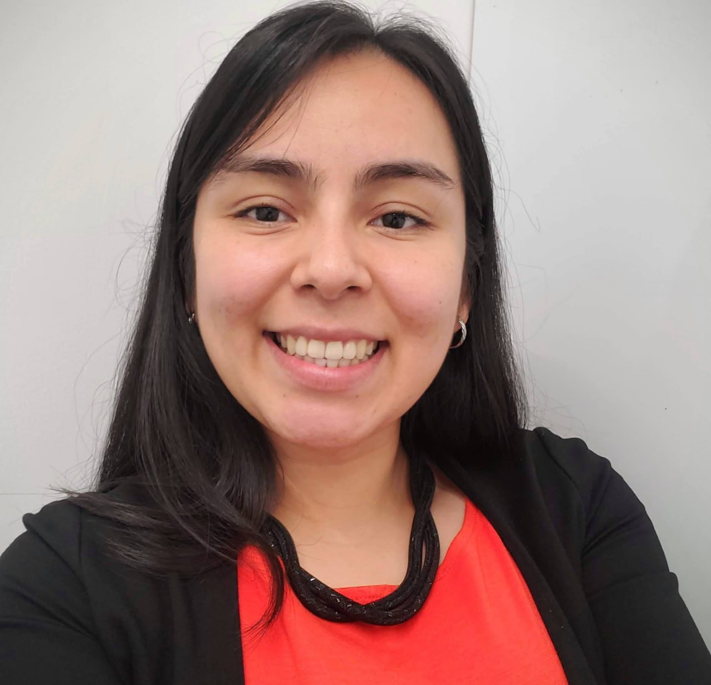

Soy Lariza, Ingeniera en sistemas enfocada en la ingeniería y análisis de datos. Poseo una sólida base técnica en herramientas como Python, SQL, R, Power BI y muchas otras similares. Transformo datos complejos en soluciones estratégicas y visualizaciones de alto impacto. Me apasiona aplicar la ciencia y la informática para optimizar procesos y facilitar la toma de decisiones basada en evidencia.

Soy ingeniera en sistemas con enfoque en ingeniería y análisis de datos e investigación. Me gusta el proceso de extraer datos de diferentes fuentes y contar la historia que ellos esconden.
He trabajado con equipos de producto y negocio para diseñar pipelines de datos, modelar información y construir dashboards que se usan para agilizar la toma de decisiones.
Fuera del trabajo, me gusta siempre aprender cosas nuevas, salir a correr y ver documentales.
Analisis de algoritmos de compresión sin pérdida para imágenes de mapas de clasificación
Diseño e implementación de un pipeline batch que consolidaba datos de artículos científicos, reduciendo errores manuales y tiempo de carga.
Diseñé e implementé dashboards para distintos tipos de usuarios en un Banco de renombre, con actualización automática.
Analisis de la sinergia entre los datos de VLBI y Gaia para mejorar la precisión en la medición de posiciones estelares.
Desarrollo de una interfaz de usuario en C++ para una calculadora de regresión lineal
Escríbeme directo o encuéntrame en cualquiera de estas plataformas. Respondo en 1-2 días hábiles.
maholy.sandoval@gmail.com